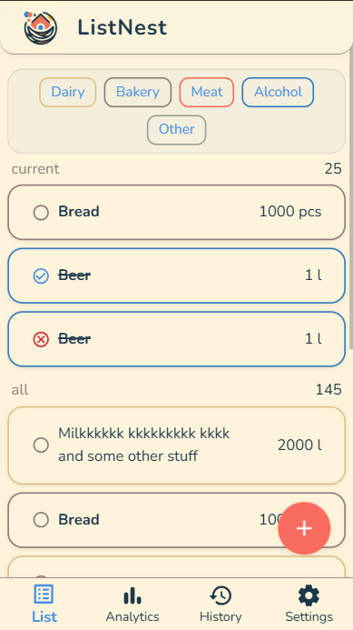
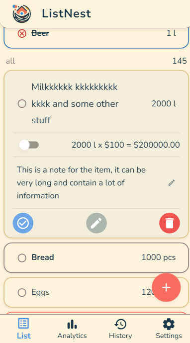
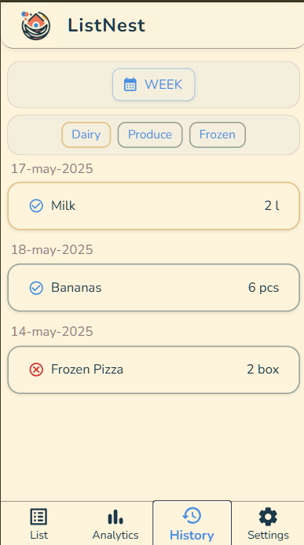
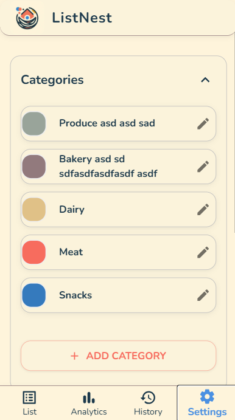
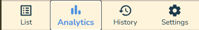

List, Analytics, History, Settings tabs for quick access.
ListNest is a GenAI-powered collaborative grocery shopping app for families.
You can add, edit, organize, and track your shopping items, view history, and manage categories—all in a modern, mobile-friendly UI.
Footer Navigation:
List, Analytics, History, Settings tabs for quick access.
Empty State:
Shown when you have no items. Tap "Add First Item" to start.
Main List with Items:

View, filter, and manage your current and all items.
Use category chips to filter.
Add Item:

Tap the "+" button to add a new item.
Enter name, quantity, price, note, and category.
Expanded Item:

Tap an item to expand and see details, notes, and actions.
Edit Item (View/Edit):

Edit any field by tapping the pencil icon.
Edit Item (Editing Field):
Active field editing with validation.
Delete Item Confirmation:
Confirm before deleting (item can be restored later).
Restore Item Confirmation:

Restore deleted/bought items to the active list.
Empty State:

No history yet—appears after you buy/delete items.
History List:

View past items, grouped by date.
Filter by date range and category.
Select Date Range:
Choose preset or custom date ranges for filtering.
Categories List:

View and manage item categories.
Edit Category:

Edit name and color, or delete a category.
Add Category:

Add a new category with a name and color.
List Tab Selected:
Analytics Tab Selected:

History Tab Selected:

Settings Tab Selected: